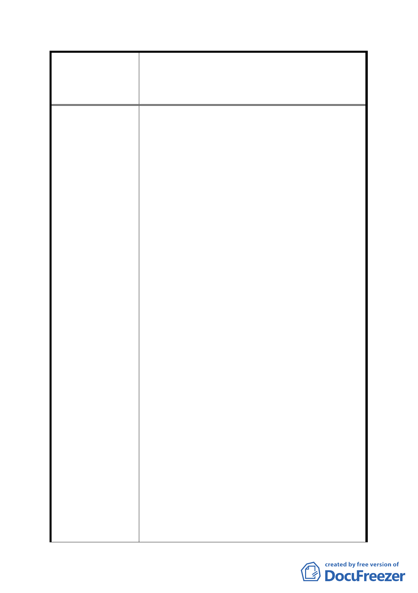

案名
建議辦法
擬定臺北市內湖區蘆洲里附近工業區細部計畫暨變
更第 2 種工業區為科技工業區 B 區(特)、科技工業
區 B 區、道路用地、護坡用地及變更工業區(供輕工
業使用)為科技工業區 A 區(特)計畫案
1. 三十多年來大台北地區之垃圾都匯流到本里的
垃圾山及垃圾焚化廠，致使本區域成為臺北市垃
圾消化場而窳陋至今。就「情」「理」而言，請
市府能以『專業考量』給予本區域適當之容積獎
勵予以回饋。
2. 重劃 A、B、C 區之道路業經徵收開闢完成，是可
立即申請建築之地區，目前合法建築林立。市府
再次以重劃手段來進行更新，實施後原可建土地
面積立即折損 45%，「較有價值之壹樓可建面積
亦折損 45%之容積量」，請酌增土地使用容積率，
以補償較有使用價值之壹樓可建容積縮減之損
失。
3. 懇請考量以『市地重劃為手段』為達成大街廓之
『公辦都市更新』目的之執法精神，建請考量依
據臺北市都市更新自治條例第 19 條及台北市都
市更新單元規劃設計獎勵容積評定基準之精
神，給予容積獎勵。
4. 原有土地均公告為工二使用之土地，公展計畫書
編定住宅區是都市發展局主張。然公展規劃說明
所示住宅區容積率為 200%，工業區為 364%，相
差 1.82 倍，試問落差如何計算得來？公平性又
何在？
5. 原有區內安康路 226 巷及 228 巷(坐落重劃 B 區
住宅區範圍)共約 50 戶住家，每戶約 30 坪之房
屋面積，容積率又僅有 200%，其重劃完成後自
行建築之可得容積為 10×0.55×200%＝11 坪房屋
面積，要推動重劃其阻力有多大將可想而知。
6. 綜上說明為求公平合理重劃更新美夢早日達
成，建請依照內政部公布之「工業區變更住宅區
之內容」以為重劃 B 區內工業區、住宅區之土地
使用容積率的比例依循，（所有土地均已變更主
要計畫提高公共設施，致使重劃後捐地 45%，依
辦法所訂再捐地 10%，故以工變住考量住宅區之
容積應為 200%÷0.55×0.9＝328%。）
- 35 -